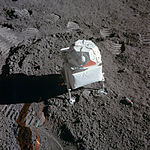
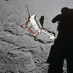

Apollo Lunar Surface Experiments Package
L’Apollo Lunar Surface Experiments Package (ALSEP) est un ensemble d'instruments scientifiques installé par les astronautes des six missions du programme Apollo à la surface de la Lune entre 1969 et 1972. La mission Apollo 11 installa une version simplifiée de l'ALSEP : l’Early Apollo Scientific Experiments Package (EASEP).
Ces instruments ont permis d'étudier, jusqu'à leur arrêt en 1977, plusieurs caractéristiques de l'atmosphère, du sol et du sous-sol lunaire : sismicité, vent solaire, température, composition de l'atmosphère, champ magnétique, etc.
L'ALSEP est constitué d'un poste central chargé de transmettre les données scientifiques recueillies vers la Terre au Goddard Space Flight Center, recevoir les instructions et redistribuer l'énergie électrique fournie par un générateur thermoélectrique à radioisotope (RTG) à un ensemble de quatre à six instruments scientifiques dont la composition a varié selon les missions.
Sommaire
Contexte[modifier | modifier le code]
Les instruments et les expériences comprises dans l'ALSEP sont sélectionnés en février 1966. Les organisations responsables de leur développement et les investigateurs principaux et secondaires sont :
- expérience sismique passive : Massachusetts Institute of Technology, Frank Press (en) ; université Columbia, George Sutton ;
- magnétomètre : NASA Ames Research Center, C. P. Sonett, centre de vol spatial Marshall, Jerry Modisette ;
- vent solaire de moyenne énergie : Jet Propulsion Laboratory, C. W. Snyder et M. M. Neugebauer ;
- détecteur d'ions suprathermiques : université Rice, J. W. Freeman, Jr., centre de vol spatial Marshall, Curt Michel ;
- mesure du flux thermique lunaire : université Columbia, M. Langseth ; université Yale, S. Clark ;
- vent solaire à faible énergie : université Rice, B. J. O'Brien ;
- expérience sismique active : université Stanford, R. L. Kovach ; United States Geological Survey, J. S. Watkins.
L'ALSEP est construit et testé par la société Bendix de Ann Arbor. Les instruments peuvent fonctionner de manière autonome après le départ des astronautes et effectuer des mesures dans l'environnement lunaire sur de longues périodes. Les instruments sont disposés autour du poste central qui fournit l'énergie électrique grâce à un générateur thermoélectrique à radioisotope (RTG) et transmet les données recueillies à la station de contrôle sur Terre. Le contrôle thermique est réalisé à l'aide de mesures passives (isolants, réflecteurs, protections thermiques) ainsi qu'à l'aide de résistances et de radiateurs.
Les instruments scientifiques ALSEP par mission[modifier | modifier le code]
| Instrument | Apollo 11 | Apollo 12 | Apollo 14 | Apollo 15 | Apollo 16 | Apollo 17 |
|---|---|---|---|---|---|---|
| Localisation | Mare Tranquillitatis 23,4°E 0,7°N |
Oceanus Procellarum 23,5°O 3,0°S |
Fra Mauro 17,5°O 3,7°S |
Hadley Rille 3,7°E 26,1°N |
Descartes 15,5°E 9,0°S |
Taurus Littrov 30,8°E 20,2°N |
| Sismomètre passif (PSE et PSEP) | x | x | x | x | x | |
| Sismomètre actif (ASE) | x | x | ||||
| Magnétomètre surface lunaire (LSM) | x | x | x | |||
| Spectromètre vent solaire (SWS) | x | x | ||||
| Détecteur ions suprathermiques (SIDE) | x | x | x | |||
| Mesure des flux thermiques (HFE) | x | x | x | |||
| Mesure des particules chargées (CPLEE) | x | |||||
| Jauge cathodique froide (CCGE et CCIG) | x | x | x | |||
| Détecteur micrométéorites et éjectats (LEAM) | x | |||||
| Profil sismique de la Lune (LSPE) | x | |||||
| Spectromètre de masse (LACE) | x | |||||
| Gravimètre (LSG) | x | |||||
| Détecteur de poussière | x | x | x | x | ||
| Réflecteur laser (LRRR) | x | x | x |
Résultats scientifiques[modifier | modifier le code]
Le rapport scientifique final établi par la NASA en 1979 recense un grand nombre de résultats permettant des progrès significatifs dans la connaissance de la Lune.
Les sismomètres passifs ont mis en évidence trois types de secousses sismiques[2] :
- Des secousses profondes se produisant avec une très grande régularité (1 fois tous les 27 à 28 jours) situées à une profondeur comprise entre 800 et 1 000 km et conséquence d'un phénomène de marée (attraction de la Terre sur la Lune) ;
- Des secousses à faible profondeur (moins de 100 km) irrégulières et peu fréquentes (5 par an) mais libérant beaucoup d'énergie ;
- Les secousses découlant de l'arrivée de météorites sur le sol lunaire.
Les données fournies par les sismomètres ont permis aux scientifiques de l'époque d'esquisser une modélisation de la structure interne de la Lune (épaisseur de la croûte, taille du noyau…).
Le magnétomètre a mis en évidence des champs magnétiques locaux faibles compris, selon le lieu, entre 3×10-9 et 327 × 10−9 teslas[3].
Les capteurs de températures ont permis de déterminer que la température moyenne du sol oscillait selon les sites entre 207 kelvins (−67 °C) et 216 K et que les températures moyennes maximum du proche sous-sol (entre 1 et 2 mètres de profondeur) était de l'ordre de 250 K[4]. Des estimations de conductivité thermique de la couche superficielle et du sous-sol ainsi qu'une estimation du gradient de température du sous-sol ont été réalisés à partir des données collectées.
Les composants communs[modifier | modifier le code]
Toutes les stations ALSEP ont des composants communs.
| Désignation | Schéma | Photo | Description |
| Poste central ALSEP | C'est principalement un boîtier qui contrôle l'ensemble des instruments de l'ALSEP. Il reçoit des instructions de la Terre qu'il renvoie vers chacun des instruments, il transmet les données scientifiques recueillies et fournit l'énergie électrique à chaque instrument. Les échanges radio passent par une antenne de 58 cm de long pour 3,8 cm de diamètre montée au sommet du poste central. L'ensemble a la forme d'une boîte d'un volume de 34,8 dm3 pesant 25 kg. Pour les missions Apollo 12 et 15, un détecteur de poussière est monté au sommet du poste pour mesurer l'accumulation de poussière lunaire. | ||
| Générateur thermoélectrique à radioisotope (RTG) | Le RTG est la source d'énergie de l'ALSEP. Il utilise la chaleur fournie par la radioactivité d'une capsule de plutonium 238 et des thermocouples qui permettent de générer environ 70 watts. L'ensemble tient dans un cube de 45 cm de côté et pèse environ 20 kg. | ||
| Conteneur à plutonium | Un conteneur contient le plutonium 238 utilisé comme combustible par le RTG. Il est logé dans le compartiment SEQ. Le conteneur est conçu pour résister à une explosion de la fusée dans le cas d'un lancement interrompu ou à une rentrée dans l'atmosphère terrestre (ce qui se produisit pour Apollo 13). |
Liste des instruments scientifiques[modifier | modifier le code]
| Désignation | Schéma | Description |
| Sismomètre actif (ASE) | ASE (Active Seismic Experiment) est un sismomètre actif utilisé pour déterminer la composition du sous-sol lunaire sur plusieurs centaines de mètres de profondeur. L'instrument est composé de 3 sous-ensembles : 3 géophones placés en ligne par les astronautes pour détecter les explosions de charges explosives, un mortier avec 4 charges explosives destinées à être lancées à des distances variables de l'ALSEP et un marteau sismique utilisant de petites charges explosives mis en œuvre par les astronautes et décrit sur le schéma ci-contre. | |
| Charged Particle Lunar Environment Experiment (CPLEE) | Le CPLEE mesure les flux de particules chargées tels que les ions et les électrons. | |
| Jauge cathodique froide (CCGE) | Le CCGE (Cold Cathode Gauge Experiment) est une version autonome du CCIG. | |
| Jauge cathodique ionique froide (CCIG) | Le CCIG (Cold Cathode Ion Gauge) est un instrument qui mesure la pression atmosphérique de l'atmosphère lunaire. Il devait initialement faire partie du SIDE, mais le champ magnétique généré par l'instrument aurait créé des interférences. | |
| Mesure des flux thermiques (HFE) | Le HFE (Heat Flow Experiment) mesure les variations thermiques du sous-sol pour déterminer à quel rythme la chaleur interne de la Lune s'évacue vers l'extérieur. Ces mesures doivent permettre d'estimer la radioactivité interne et permettre de comprendre l'évolution thermique de la Lune. L'instrument comporte un boîtier électronique et 2 sondes. Chaque sonde est placée dans un trou de 2,5 mètres de profondeur foré par les astronautes. | |
| Réflecteur laser (LRRR) | Les réflecteurs lasers LRRR (Laser Ranging Retroreflector) permettent de mesurer avec précision la distance Terre-Lune en réfléchissant la lumière de lasers situés sur Terre. Ces mesures sont utilisées pour estimer l'éloignement progressif de la Lune, conséquence de la dissipation des marées et du mouvement irrégulier de la Terre. Cet instrument passif est le seul encore utilisé aujourd'hui. | |
| Expérience d'analyse de la composition de l'atmosphère lunaire (LACE) | Le LACE a comme objectif de déterminer la composition de l'atmosphère lunaire. | |
| Détecteur de micrométéorites et d'éjectats (LEAM) | Le LEAM (Lunar Ejecta and Meteorites) est conçu pour détecter les micrométéorites et les matériaux lunaires éjectés par l'impact de ceux-ci[5]. | |
| Expérience de mesure du profil sismique (LSPE) | Le LSPE (Lunar Seismic Profiling Experiment) est semblable à l'ASE, mais il doit permettre d'effectuer des mesures sur plusieurs km de profondeur. Il comprend trois sous-ensembles : 4 géophones déployés près de l'ALSEP par les astronautes, une antenne chargée de transmettre un signal aux charges explosives, 8 charges explosives d'une masse comprise entre 50 g et 4 kg. Les charges étaient installées par les astronautes durant leurs excursions en rover lunaire. | |
| Gravimètre de la surface lunaire (LSG) | Le LSG (Lunar Surface Gravimeter) effectue des mesures très précises de la gravité lunaire et de son évolution dans le temps. Les scientifiques espéraient que les données recueillies puissent être utilisées pour confirmer l'existence des ondes gravitationnelles. | |
| Magnétomètre de la surface lunaire (LSM) | Le LSM (Lunar Surface Magnetometer) mesure le champ magnétique lunaire. Les données sont utilisées pour déterminer les propriétés électriques du sous-sol. Ces données servent également à étudier les interactions entre le plasma solaire et la surface lunaire. | |
| Sismomètre passif (PSE) | Le PSE (Passive Seismic Experiment) détecte les secousses sismiques de la Lune qu'elles soient naturelles ou provoquées artificiellement afin d'étudier la structure du sous-sol. | |
| Ensemble sismomètre passif (PSEP) | Le PSEP (Passive Seismic Experiment Package) est similaire au PSE sauf qu'il est entièrement autonome. À cet effet, il dispose d'un panneau solaire et d'un système de télécommunications. Il comporte en plus un détecteur de poussière lunaire. | |
| Spectromètre de vent solaire (SWS) | Le SWS (Solar Wind Spectrometer) étudie les propriétés du vent solaire et son incidence sur l'environnement lunaire. | |
| Détecteur d'ions suprathermiques (SIDE) | L'expérience SIDE (Superheated Ion Detector Experiment) est conçue pour mesurer les différentes caractéristiques des ions positifs dans l'environnement lunaire, fournir des données sur les interactions entre le plasma et le vent solaire et mesurer le potentiel électrique de la surface de la Lune. |


Liste des missions[modifier | modifier le code]
Chaque mission comportait des expériences scientifiques différentes.
Apollo 11 (EASEP)[modifier | modifier le code]
La mission Apollo 11 n'installa pas un ALSEP complet mais une version simplifiée dite EASEP. Dans la mesure où la sortie extravéhiculaire ne devait durer que 2 h 40, l'équipage n'avait pas assez de temps pour installer un ALSEP complet dont le déploiement demande de 1 à 2 heures.
| Désignation | Photo |
| LRRR | |
| PSEP |
Apollo 12[modifier | modifier le code]
Apollo 13[modifier | modifier le code]
À cause de l'interruption de la mission aucune des expériences ne fut installée.
| Désignation | Remarques |
| CPLEE | Stocké dans le premier paquet. |
| CCGE | Stocké dans le premier paquet. |
| HFE | Stocké dans le premier paquet. |
| PSE | Stocké dans le premier paquet. |
Apollo 14[modifier | modifier le code]
| Désignation | Photo | Remarques |
| ASE | L'image du dessus montre le boîtier du mortier. L'image du dessous montre le pilote du module lunaire Edgar Mitchell en train de faire fonctionner le marteau sismique. Le boîtier du mortier, les géophones et le marteau sismique étaient stockés dans le premier paquet. Treize des 22 charges du marteau sismique purent être mises à feu. Aucune des quatre charges du mortier ne purent être tirées à cause d'un problème d'installation. Le centre de contrôle tenta d'effectuer leur mise à feu juste avant l'arrêt des ALSEP mais le système refusa de fonctionner sans doute à cause du temps écoulé depuis son installation. | |
| CPLEE | Stocké dans le premier paquet. | |
| LRRR | Stocké dans le compartiment 1 du LEM et transporté séparément jusqu'au site de l'ALSEP. | |
| PSE | Stocké dans le premier paquet. | |
| SIDE/CCIG | Stocké dans la sous-palette. Le SIDE est dans le coin supérieur gauche tandis que le CCIG est au centre de la photo. |
Apollo 15[modifier | modifier le code]
| Désignation | Photo | Remarques |
| HFE | Le boîtier électronique est situé au centre de la photo. Deux câbles le relient à chaque capteur. Stocké dans le deuxième paquet. Les forages effectués pour installer les capteurs rencontrèrent plus de résistance que prévu. Ceux-ci ne purent pas être enfoncés à la profondeur demandée. Les données recueillies ne purent pas être exploitées jusqu'à ce qu'elles puissent être comparées aux données recueillies par l'expérience similaire d'Apollo 17. | |
| LRRR | Stocké dans le compartiment III du LEM et transporté jusqu'à son lieu d'installation à l'aide du rover lunaire. | |
| LSM | Stocké dans le premier paquet. | |
| PSE | Stocké dans le premier paquet. | |
| SWS |  | Stocké dans le premier paquet. |
| SIDE/CCIG |  | Le SIDE est à gauche tandis que le CCIG est sur sa droite. Stocké avec la sous-palette. On remarque l'inclinaison du SIDE. Celle-ci est volontaire du fait de la latitude du site d'atterrissage d'Apollo 15. On remarque également la tige reliant le SIDE et le CCIG. Cette nouvelle configuration résulte d'une demande des astronautes des missions précédentes qui eurent du mal à installer SIDE/CCIG qui étaient à l'époque reliés uniquement par le câblage. |
L'antenne articulée était stockée dans la sous-palette. Les instruments de l'ALSEP, la perche de transport et les outils étaient stockés dans le deuxième paquet.
Apollo 16[modifier | modifier le code]
| Désignation | Photo | Remarques |
| ASE | 
|
La photo montre le boîtier contenant le mortier. On remarque la nouvelle embase utilisée qui doit permettre d'éviter les problèmes rencontrés avec Apollo 14. Le mortier, les géophones et le système contenant les petites charges sont stockés dans le premier paquet. L'embase du boîtier contenant le mortier est stocké dans le second paquet. Après le lancement des trois premières charges, le capteur d'inclinaison se dérégla et il fut décidé de ne pas tirer la quatrième charge. Dix-neuf charges du marteau sismique purent être tirées. |
| HFE | 
|
La photo montre une des sondes de l'instrument de mesure des flux thermiques. Stocké dans le deuxième paquet. Après avoir mis en place une des sondes, le commandant John Young se prit les pieds dans le câble qui reliait l'instrument au poste central. Le câble fut arraché de sa connexion et aucune réparation ne put être effectuée. |
| LSM | Stocké dans le premier paquet. | |
| PSE | Stocké dans le premier paquet. |
Apollo 17[modifier | modifier le code]
Déroulement de l'installation de l'ALSEP[modifier | modifier le code]
L'ALSEP est rangé dans le compartiment réservé aux instruments scientifiques (SEQ) de l'étage de descente du module lunaire Apollo. Les photos suivantes illustrent le déploiement de l'ALSEP d'Apollo 12.
Pete Conrad ouvre les portes du compartiment SEQ à l'aide de plusieurs sangles passant par des poulies.
Alan Bean extrait le deuxième paquet du compartiment SEQ. Ceci est effectué en partie en utilisant un palan et un système de poulies visible sur la photo. Pour Apollo 17, le système fut jugé trop complexe : il fut supprimé. Pour Apollo 11, Buzz Aldrin décida de ne pas utiliser le système pour économiser du temps.

Bean jette le couvercle avec l'outil DRT. Aucun des deux n'aura d'utilité par la suite.
Bean tente d'extraire le combustible de son container avec un outil dédié (le FTT). On peut voir un des outils universels (UHT) qui est toujours attaché au sous-ensemble RTG. Pour la mission Apollo 12, la capsule de plutonium était coincée dans son logement à cause de la dilatation thermique (Bean put sentir la chaleur malgré ses gants). Conrad frappa sur le container avec un marteau ce qui permit à Bean d'extraire le combustible. Celui-ci est ensuite inséré dans le RTG.
Cette photo montre Jim Lovell s'entrainant pour la mission Apollo 13. Il installe une maquette du poste central. Le poste se déploie grâce à un système de ressorts.

{kind=link}
{kind=link}
{kind=link}
{kind=link}
{kind=link}
{kind=link}
{kind=link}
{kind=link}
{kind=link}
{kind=link}
{kind=link}
{kind=link}
{kind=link}
{kind=link}
{kind=link}
{kind=link}
{kind=link}
{kind=link}
{kind=link}
{kind=link}
{kind=link}
{kind=link}
{kind=link}
{kind=link}
{kind=link}
{kind=link}
{kind=link}
{kind=link}
{kind=link}
{kind=link}
{kind=link}
{kind=link}
{kind=link}
{kind=link}
{kind=link}
{kind=link}
{kind=link}
{kind=link}
{kind=link}
{kind=link}
{kind=link}
{kind=link}
{kind=link}
{kind=link}
{kind=link}
{kind=link}
{kind=link}
{kind=link}
{kind=link}
{kind=link}
{kind=link}
{kind=link}
{kind=link}
{kind=link}
{kind=link}
{kind=link}
{kind=link}
{kind=link}
{kind=link}
{kind=link}
{kind=link}
{kind=link}
{kind=link}
{kind=link}
{kind=link}
{kind=link}
{kind=link}
{kind=link}
{kind=link}
{kind=link}
{kind=link}
{kind=link}
{kind=link}
{kind=link}
{kind=link}
{kind=link}
{kind=link}
{kind=link}
{kind=link}
{kind=link}
{kind=link}
{kind=link}
{kind=link}
{kind=link}
{kind=link}
{kind=link}
{kind=link}
Arrêt[modifier | modifier le code]
Les instruments scientifiques étaient contrôlés depuis la Terre. Les stations fonctionnèrent à compter de leur installation jusqu'au 10 septembre 1977, date à laquelle elles furent arrêtées essentiellement pour des raisons budgétaires. Par ailleurs à cette date, la puissance électrique disponible ne permettait plus de faire fonctionner simultanément le système de transmission et les instruments : la puissance électrique produite était pratiquement divisée par trois pour les installations les plus anciennes du fait de l'affaiblissement de la source radioactive[6].
La salle de contrôle de l'ALSEP fut réutilisée pour la réactivation de Skylab.
Conservation des données scientifiques[modifier | modifier le code]
Les données transmises par les instruments sont conservées au National Space Science Data Center du Goddard Space Flight Center. En 2003, une grande partie des cassettes sur laquelle les données avaient été archivées ont pu être restaurées[7].
Le démarrage du programme Constellation, qui devait relancer l'exploration lunaire, a renouvelé l'intérêt de la NASA pour les données recueillies par les stations ALSEP. On pense qu'une partie de celles-ci n'a pas été archivée à cause de l'interruption brutale du financement du programme en 1977. Une évaluation du volume d'informations manquantes susceptibles de présenter un intérêt ainsi que de la faisabilité de leur récupération a été lancée en 2008[8].
Notes et références[modifier | modifier le code]
- (en) ALSEP Termination Report [archive] - LPI, avril 1979 [PDF]
- (en) ALSEP Termination Report [archive] - LPI, avril 1979, chap. 6, p. 2 [PDF]
- (en) ALSEP Termination Report [archive] - LPI, avril 1979, chap. 6, p. 7 [PDF]
- (en) ALSEP Termination Report [archive] - LPI, avril 1979, chap. 6, p. 10 [PDF]
- (en) Lunar Ejecta and Meteorites [archive]
- (en) ALSEP Termination Report [archive] - LPI, avril 1979, chap. 4, p. 43 [PDF]
- (en) « Apollo ALSEP Data Restoration » [archive], NASA, (consulté le 19 juillet 2009)
- (en) L. R. Lewis, « Apollo Lunar Surface Science Stations (ALSEPs) Then (1970s) and Now (2008) » [archive] [PDF], LPI, (consulté le 19 juillet 2009)
Voir aussi[modifier | modifier le code]
Articles connexes[modifier | modifier le code]
Liens externes[modifier | modifier le code]
- (en) Apollo ALSEP [archive] - Astronautix.com (voir archive)
- (en) The Apollo Program (1963 - 1972) [archive] - NSSDC (page dédiée aux missions Apollo)
- (en) Apollo Scientific Experiments Data Handbook [archive] - LPI, août 1974 [PDF]
- (en) ALSEP Termination Report [archive] - LPI, avril 1979 [PDF]
- (en) Catalog of Apollo Experiment Operations [archive] - Thomas A. Sullivan, LPI, 1994 [PDF]
- L'ALSEP (Coffret Apollo d'expériences scientifiques lunaires) [archive] - Paul Cultrera, De-la-terre-a-la-lune.com
{kind=link}